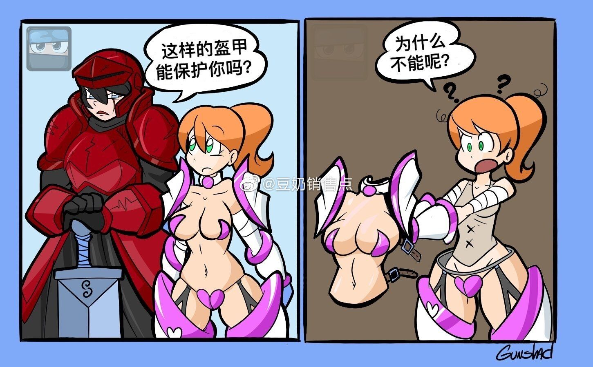

比基尼全身甲（霧）D+1500
這是一套覆蓋除了頭部以下整個身體的全身盔甲，提供8/8盔甲防御，并具有【防彈】【防能量武器】【免疫自然墜落傷害】的特性。因其獨特的設計和整體貼合身體以及使用材質較輕的關系，它視為一件輕甲。
以人體膚色作為主體顏色的外殼讓穿戴者這種盔甲的使用者像是僅僅穿著單薄的比基尼一樣。獨特和定制的設計又使其內部完全貼合使用者的身形，同時兼具了防御和觸感的材質也具備十分優秀的緩沖效果，可以根據使用者的需求定制盔甲的外形，身材，三圍等，但其基礎數值必須稍高于使用者。（即，至少是要比本體更胖（霧）豐滿一些。）
視覺預覽圖（見下圖）
